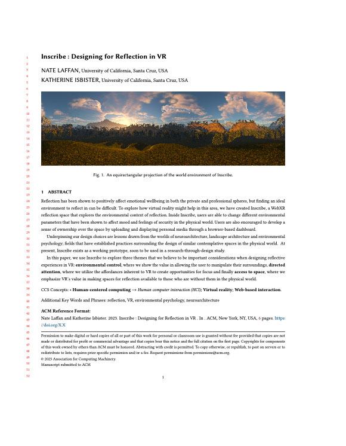

Nate Laffan
Ph.D. student in Computational Media at UCSC
I research computational methods of meaning making and how digital tools can support a meaningful life.
I am currently a Phd Student in the SET Lab, where I am applying concepts from environmental psychology and landscape architecture to investigate the design of affective/reflective spaces in VR.
Research
A Thinking Place
How might the design of reflective & contemplative spaces in the physical world translate to a virtual context?
Click here to learn more.
-

Inscribe : Designing for Reflection in VR (CHI 2023)
At CHI 2023 I presented a prototype of a WebXR reflection space at the Reflection Workshop. The paper lays out basic considerations for designing reflective environments in VR, and will soon include a prototype you can use with your own VR headset. Interested? Sign up to get updates about the project.